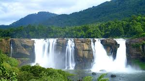

Athirapilly
Athirappilly is popular among tourists.
Athirappilly Falls is one of the best places to visit in Kerala.
Another popular waterfall to visit is the Vazhachal Falls.
Athirappilly Falls is a part of Chalakudy river and it is approximately 80 feet in height.
Athirappilly is easily reachable from Chalakudy by taking a vehicle for rent or by bus from the Chalakudy private bus terminal.

Bekalfort
India declared Bekal Fort a special tourism area in 1992 and formed Bekal Tourism Development Corporation three years later to promote it.
The fort has been featured in the song 'Uyire' (Tamil) from the movie Bombay and the song ‘Dwadashiyil’ from the Malayalam movie Madhuranombarakattu.
The fort appears to emerge from the sea. Almost three-quarters of its exterior is in contact with water.
Bekal fort was not an administrative centre and does not include any palaces or mansions.

Edakkal Caves
The Edakkal caves are two natural caves at a remote location at Edakkal, 25 km (15.5 mi) from Kalpetta in the Wayanad district of Kerala in India.
They lie 1,200 m (3,900 ft) above sea level on Ambukutty Mala, near an ancient trade route connecting the high mountains of Mysore to the ports of the Malabar Coast.

Kovalam Beach
Kovalam was among the most prominent tourist spots in India during the hippie era.
It still has a high status among tourists, who arrive mostly from Europe and Israel.
Kovalam is finding a new significance in the light of several Ayurvedic salons,
and recuperation and regeneration resorts which provide a wide variety of Ayurvedic treatments for tourists.